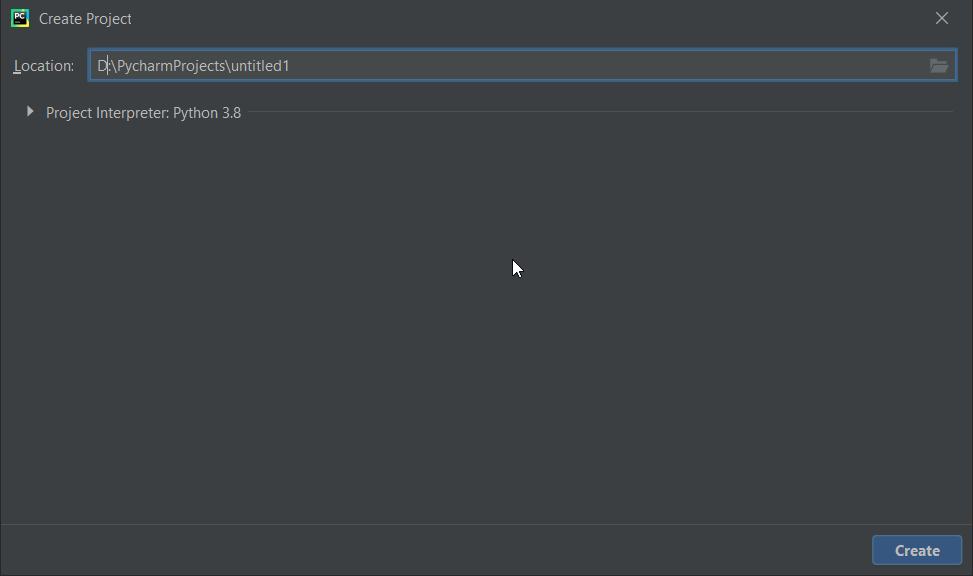
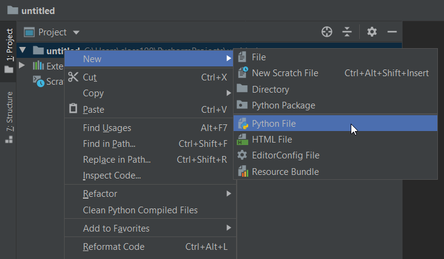
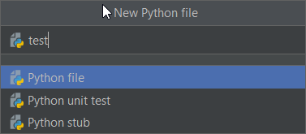
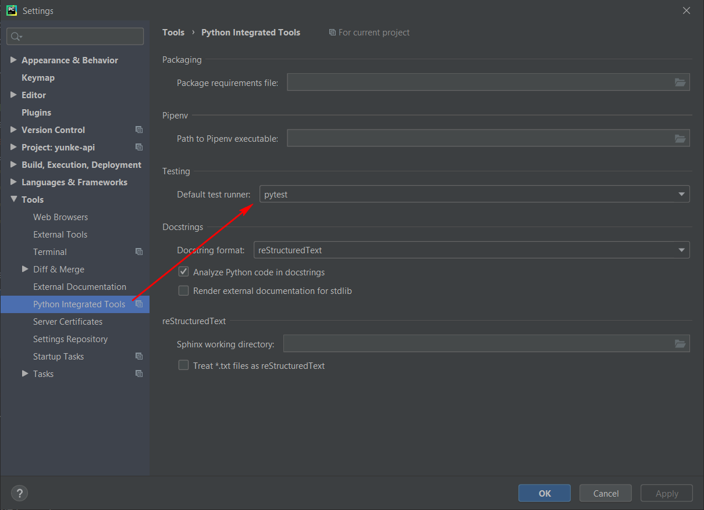
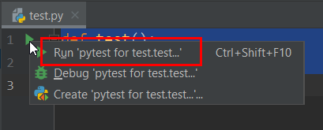

本书作者：测试开发刚哥，文章版权归个人所有，未经授权请勿转载。
安装 Python 和编辑器 PyCharm
Python 安装包下载地址是： https://www.python.org/downloads/ PyCharm 安装包下载地址是： https://www.jetbrains.com/pycharm/download/ 下载后按常规软件安装。
pytest
pytest 是 Python 内置包，无需单独安装，但是需要设置。
创建 1 个 Project 和 1 个 test.py 来试试，左上角点击 File | New Project | create，创建项目。在项目中右键选择 New | File 创建 test.py



接着设置 PyCharm，默认 PyCharm 自带的测试框架是 Unittests，在 File | Settings | Tools | Python Integrated Tools | Testing | Default test runner，修改为 pytest

在 test.py 文件中添加代码
def test():
pass
这个时候 def 的左边会出现一个绿色的箭头，点击之后就可以使用 pytest 运行，注意一定要是 pytest for… 才可以，如果只是 Run test.py，是不走 pytest 执行的（右上角 Edit Configurations 删掉来解决）

执行之后控制台输出信息就可以了
Testing started at 11:10 AM ...
"D:\Program Files (x86)\Python38-32\python.exe" "D:\Program Files\JetBrains\PyCharm Community Edition 2020.1.2\plugins\python-ce\helpers\pycharm\_jb_pytest_runner.py" --target test.py::test
Launching pytest with arguments test.py::test in D:\PycharmProjects\untitled
============================= test session starts =============================
platform win32 -- Python 3.8.3, pytest-5.4.3, py-1.9.0, pluggy-0.13.1 -- D:\Program Files (x86)\Python38-32\python.exe
cachedir: .pytest_cache
rootdir: D:\PycharmProjects\untitled
collecting ... collected 1 item
test.py::test PASSED [100%]
============================== 1 passed in 0.14s ==============================
Process finished with exit code 0
至此，pytest 的环境就准备好了。